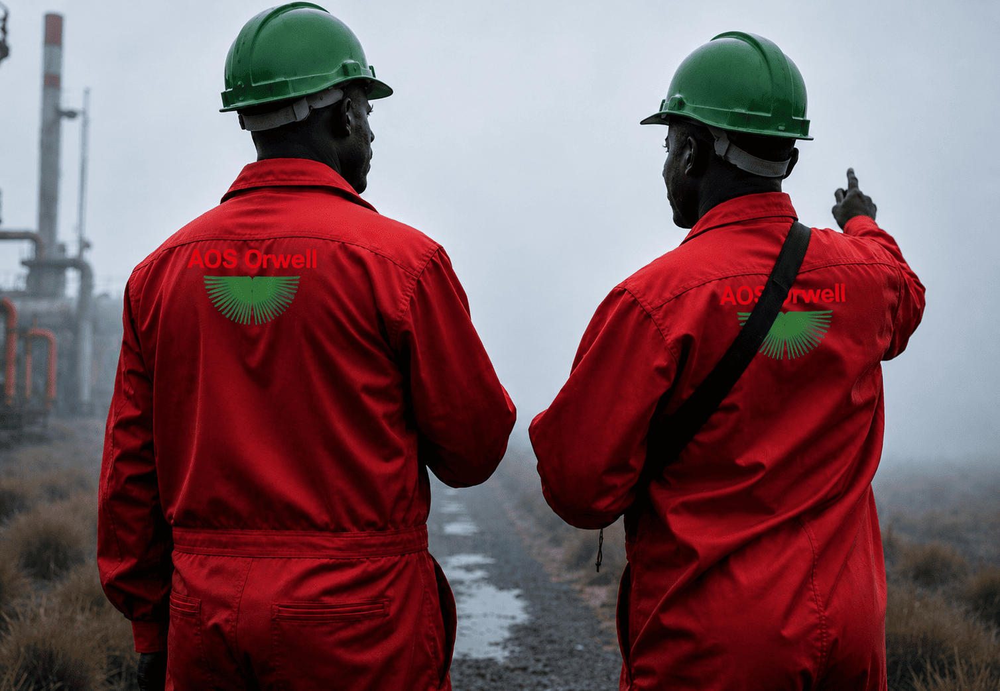

IPM & Turnkey Well Delivery Services
At AOS Orwell, we provide full Integrated Project Management and Turnkey Well Delivery Services by offering our clients a one-stop solution for delivering cost-efficient wells, safer and faster. Our approach safeguards our clients from the complexities of managing multiple vendors by bundling the entire scope of work from engineering and planning to execution and handover of the project including drilling, completions, interventions, and workover, under one experience, accountable team.
Read More